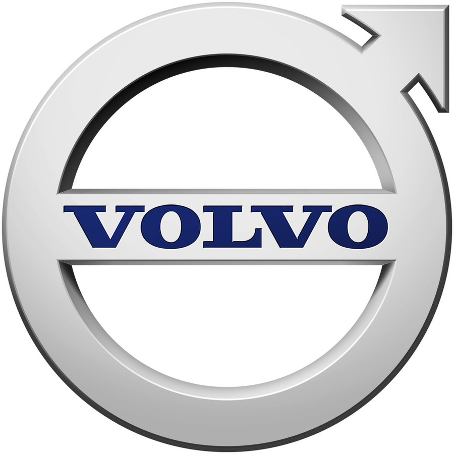
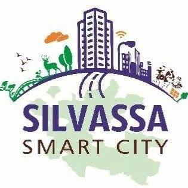

Urban and Transport Planner based in Bangalore, currently working at Microgrid Labs (USA) — analysing EV fleet charging infrastructure and bus electrification at scale for transit agencies across the United States.
A keen advocate of public transport and sustainable urban mobility, blending expertise in transit operations with perceptive analytical and GIS skills to bring innovative strategies to cities and fleets of the future.
The domains where planning meets data meets electrification.

Electric VehiclesA route through the milestones — scroll to ride the line →
Deep-dived into India's Bus Rapid Transit landscape. Led primary field surveys for Surat Sitilink BRTS — counting passengers, timing headways, and mapping route performance gaps. Benchmarked citybus operations against national standards and delivered technical recommendations to Surat Municipal Corporation. First time turning raw transit data into policy-ready insights.
Travelled key intercity coach corridors across India to understand traveller behaviour and service quality. Designed and deployed user perception surveys across multiple Volvo operator routes. Analysed brand consistency, onboard experience, and willingness-to-pay data. The research directly informed fleet and branding strategy for Volvo's India operations.
First foray into the world of electric mobility. Assessed route feasibility and charging infrastructure requirements for eBus deployment in Silvassa's Smart City programme. Sized the fleet for ridership demand, modelled depot charging schedules, and recommended charging station placement — laying groundwork for the city's public EV transition.
Joined one of India's largest engineering conglomerates to hone skills at scale. Contributed to multi-modal transport planning studies, traffic impact assessments, and demand forecasting for major infrastructure projects. Produced GIS-based spatial analysis deliverables, coordinated with civil engineering teams, and deepened expertise in integrating transport into large urban developments.
Working with a US-based energy and transport startup to accelerate bus electrification across American transit agencies. Analyse fleet operations, route profiles, and energy loads to size charging infrastructure. Process GTFS feeds and real-world telemetry to build data pipelines for EV transition planning. Consult directly with transit agencies, utilities, and government clients on sustainable fleet strategy.
Microgrid Labs — USA (Remote)
2022 – PresentCEPT University — CRDF, Ahmedabad
2017
Volvo Buses India
2018
Silvassa Smart City Ltd
2020L&T Infrastructure Engineering
2021 – 2022